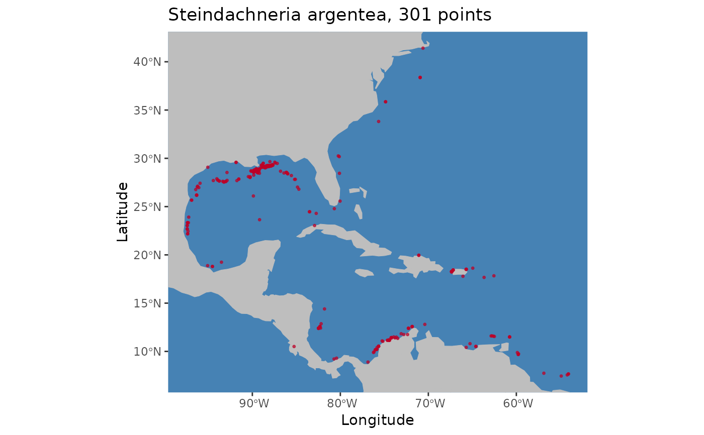

A convenient wrapper around ggplot to generate formatted occurrence point plots.
pointMap(
occs,
spName,
land = NA,
ptCol = "#bd0026",
landCol = "gray",
waterCol = "steelblue",
ptSize = 1,
verbose = TRUE,
...
)A data.frame with at least two columns
named "longitude" and "latitude" or that
can be coerced into this format.
A character string with the species name to be used in the plot title.
An optional coastline polygon shapefile
of type sf to provide geographic context for the
occurrence points.
Color for occurrence points on map
Color for land on map
Color for water on map
numeric value for cex;
size of occurrence points on map.
logical. Switching to FALSE mutes message describing
which columns in occs are interpreted as x and y coordinates.
Additional optional arguments to pass to
ggplot initial plot object.
A ggplot plot object.
occs <- read.csv(system.file("extdata/Steindachneria_argentea.csv",
package='voluModel'))
spName <- "Steindachneria argentea"
pointMap(occs = occs, spName = spName,
land = rnaturalearth::ne_countries(scale = "small",
returnclass = "sf")[1])
#> Using decimalLongitude and decimalLatitude
#> as x and y coordinates, respectively.
#> Warning: Use of `occs[[xIndex]]` is discouraged.
#> ℹ Use `.data[[xIndex]]` instead.
#> Warning: Use of `occs[[yIndex]]` is discouraged.
#> ℹ Use `.data[[yIndex]]` instead.
